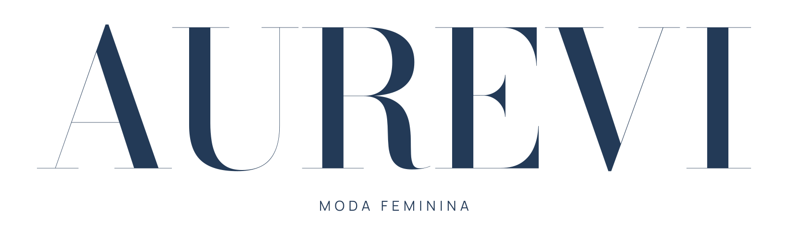
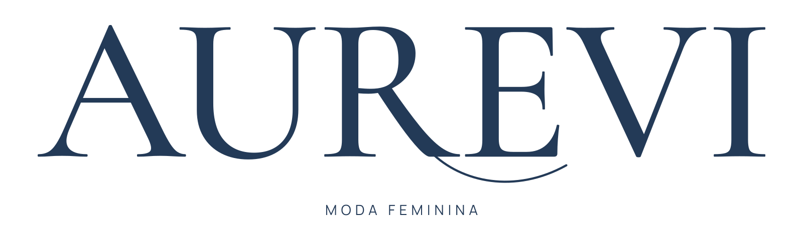
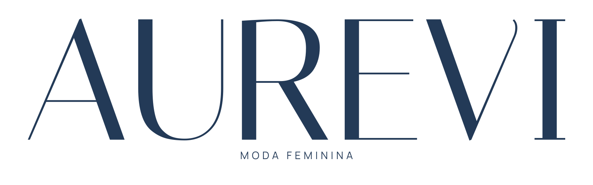
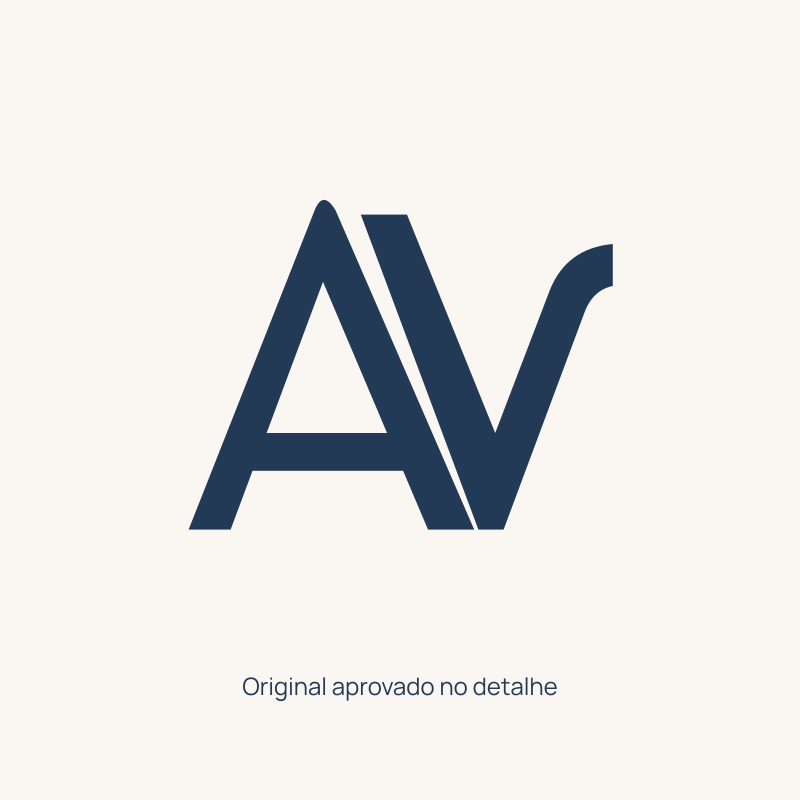
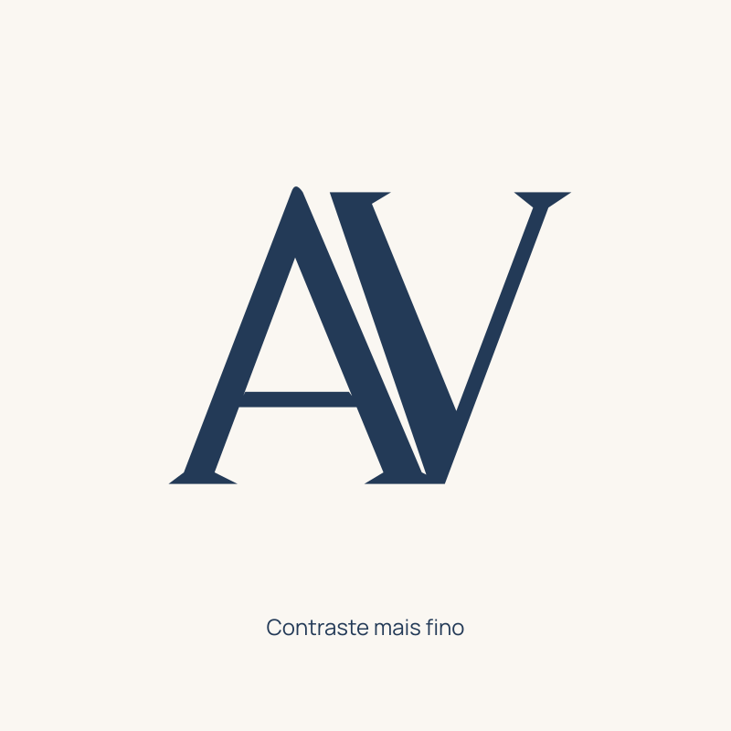
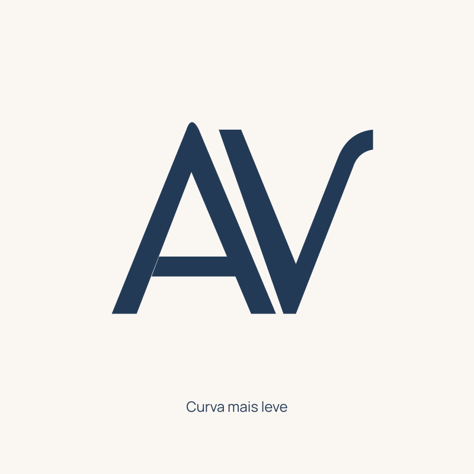
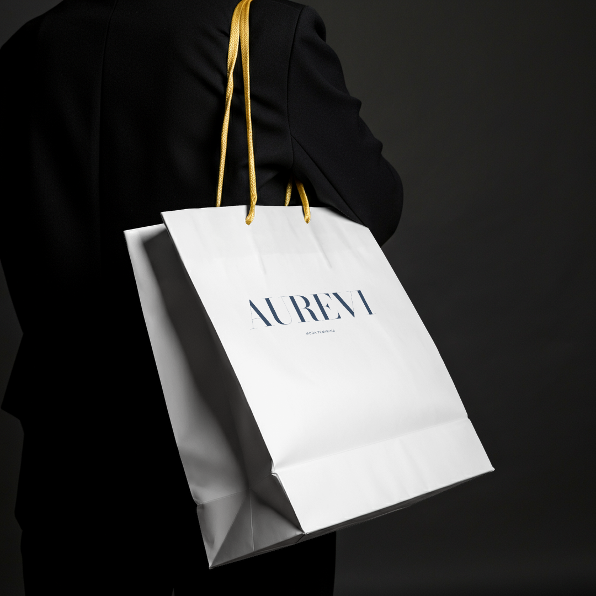
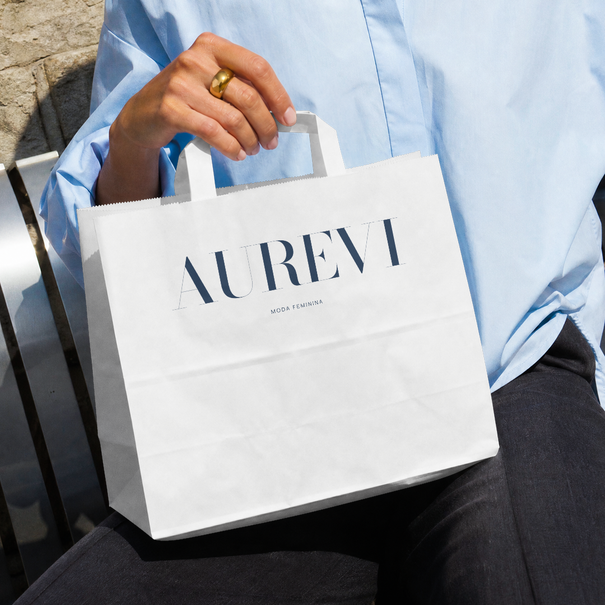
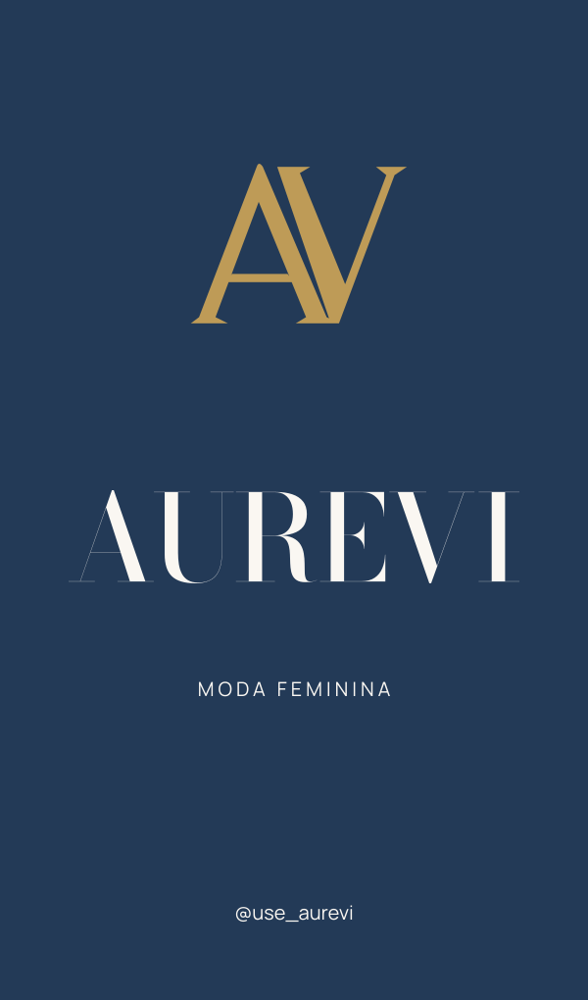

Três novas escritas.


Estudos em caixa alta para comparar o desenho do nome. A cor usada aqui é a mesma nas três opções; a paleta pode ser escolhida separadamente.
Ouro no detalhe. Vida na presença.

01
Azul noite + ouro
A opção mais próxima da elegância da referência. O azul dá presença; o ouro entra na assinatura e nos acabamentos.
Azul noite#233A57
Porcelana#FAF7F2
Ouro suave#BE9B57
02
Bordô + champagne
Mais calor e personalidade feminina. Conversa com vestidos, produção de look e ocasiões especiais.
Bordô#62273C
Champagne#F7EEE5
Ouro acetinado#C2A475
03
Grafite + rosa pérola
Uma direção atual e delicada, que deixa as cores das roupas aparecerem e mantém contraste de boutique.
Grafite#2B2931
Rosa pérola#F2E3E4
Ouro discreto#B4945C
O ouro é um acento, não uma obrigação de pintar tudo de dourado. Nas fotos, “vida” aparece nas roupas, nas cores e no movimento. Tons digitais não simulam hot stamping real.
O AV continua no centro da ideia.

O que você gostou
Mantém o símbolo da primeira versão como ponto de comparação.

Mais contraste
Afina alguns encontros e acrescenta pequenas terminações para conversar com as novas serifas.

Curva mais leve
Preserva a separação entre A e V, com uma saída mais leve no topo do V.
O símbolo pode funcionar sem acompanhar toda escrita. O refinamento final depende da opção tipográfica escolhida; ainda são estudos, não uma substituição aprovada.
Um contexto mais próximo da loja.





Novos mockups criados no Kittl, em papel claro e alças de loja. A tag é um estudo plano. Sem kraft, ecobag, flores ou cenário rústico.
Mais moda. Mais presença. Mais Aurevi.
O que observei na Donna
Na amostra pública aberta com Playwright, aparecem jeans e polo junto de vestidos com renda, drapeado, recortes e conjuntos mais produzidos. As fotos mostram a roupa em modelos e os detalhes do look.
O início do feed tem uma campanha de Natal em vermelho; isso é uma campanha pontual, não motivo para deduzir a paleta permanente da marca.
Fontes: Instagram da Donna e catálogo da loja, consultados em 04/11/2026. Análise visual da amostra carregada, sem acesso a todos os vídeos ou posts.
MINHA RECOMENDAÇÃOEscrita 02
Escrita 02
+ paleta 01
O gesto no nome traz o “tcham” que faltava. Azul noite, porcelana e ouro suave aproximam a Aurevi da elegância que você mostrou na referência.
Se quiser uma marca mais quente e marcante, escolheria a mesma escrita com a paleta 02, bordô e champagne.
As propostas são combináveis. Esta rodada serve para escolher a nova base; o kit anterior foi preservado.